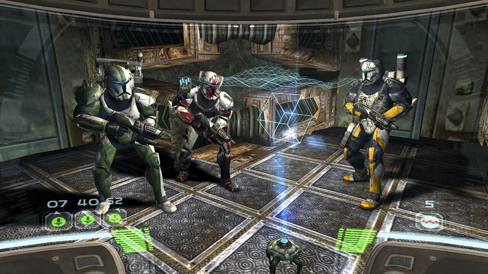

2005 was a big year for Star Wars. George Lucas would wrap up the Prequels and finally fill the gap between them and the Original Trilogy with the long-awaited and anticipated Revenge of the Sith. Other than the film, we've gotten some great pieces of literature, like Matthew Stover's novelization, James Luceno's prequel novel, "Labyrinth of Evil," comics, and other books. We would also get a lot of great games, like the tie-in movie game of "Revenge of the Sith," "Battlefront II," "LEGO Star Wars," and the infamous "Republic Commando."
"Republic Commando" celebrated its 20th anniversary on March 1st, so I decided to replay it for the first time in a long time. I hadn't played it since 2019, and I didn't remember all that much about the details. I remembered enjoying it, and on my second playthrough, I had a fantastic time! There was always something unique about this game that no other game came close to.
The FPS genre has been fairly limited in Star Wars, the first being "Dark Forces" and the last being "Republic Commando." I don't know why this genre never worked with the company, cause I know it worked well with fans, but I digress. This game is a gem from the instant you boot it up till the very end.
You play as Delta RC-1138, aka "Boss." 1138 is a number used to reference George Lucas' first feature film, "THX-1138." Boss is the leader of Delta Squad, and is joined by three other members, Deltas RC-1140, aka "Fixer," RC-1207, "Sev," and RC-1262, "Scorch." All with different voices and personalities. "Boss" is just the leader, in charge of everything, and gives commands. "Fixer" is a soldier who wants to get things done and doesn't like any side chatter, but isn't without a sense of humor. He's also great with computers and hacking into equipment, so he's the guy you want to hack into terminals. "Sev" is a gruff, tough, and sharp marksman, with a badass-sounding voice and a great sense of humor. He's a guy who will have you back at all times and would even rip out someone's guts just to help you. Scorch is a light-hearted, wisecracking soldier, always having a positive attitude and willing to kill the tension and make everyone feel better. The diversity between these guys is what makes their chemistry and brotherly bond strong.
Each member has a different color. Boss is orange, Fixer is green, Sev is red, and Scorch is yellow. Originally, they were supposed to be all white until George Lucas suggested giving them different colors. Smart call by Lucas! Other than the different voices, their colors can help differentiate them.
The gameplay is a bit similar to Halo's style of gameplay, but with a bit of extra flair to make it stand out. Unlike in Halo, your character can hold more than two weapons and two grenades. Another difference is your self-cleaning visors. This feature blew my mind. If your visor gets blood stains, cracks, or any sort of damage or debris, these babies will clean it up for you.
I can't share all the differences and all the work put into this game. If you're interested, you can check it out yourself, not only from the internet, but in the game itself. Once you beat the campaign, you will unlock all the bonus features, which include all the behind-the-scenes stuff that shows us how the game is made.
Speaking of the campaign, it's split into three parts, technically four, if you count the well-told prologue. The prologue explains the origins, which tie in well with Attack of the Clones. The first mission is on Geonosis, the second is on an abandoned Republic Cruiser called the Acclamator-class assault ship, aka the Prosecutor, and the final mission is on Kashyyyk, which leads up to Revenge of the Sith.
To this day, I do not understand why LucasArts decided to cancel the sequel. This is the only kind of squad, arena, first-person shooter Star Wars game. Sure, there have been a few first-person shooter Star Wars games like "Dark Forces" I & II. "Battlefront" I & II also have a first-person mode, but many players prefer to play it in third person. But there is nothing like "Republic Commando." That is a shame, because Star Wars and LucasArts could've stepped into the FPS market and competed with games like "Halo" and "Call of Duty." Imagine that alternate universe.
The reason why the sequel was cancelled was mainly related to a business motive. In 2004, LucasArts' newly elected president, Jim Ward, performed a complete audit on the company, which resulted in a massive cut in employees and cancellations of many titles. "Republic Commando 2" happened to be one of them, unfortunately. I guess that Jim Ward didn't see any value in this game and prefers the other titles that were released, but that's only a theory.
Regardless, this remains one of the greatest Star Wars games ever made, and certainly one of a kind. I would ask the infamous question, but I'm trying to avoid any spoilers in this review. You have to play it to understand.